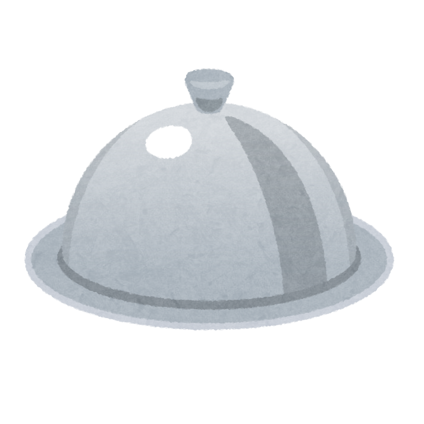

ひとことコメント
このアプリは、「今日の夕食、何にしよう？」と迷っているあなたのためのツールです。
このアプリは、コンピュータ・サイエンスの学習プラットフォームRecursionのイベント「チーム開発体験会」の課題として制作しました。 チーム開発を実践しながら、日々のちょっとした悩みを解決するツールを目指しています。
🍽今日のごはんに迷ったら、ぜひ活用してみてください！
🔗詳しい貢献内容やコードは GitHub で！